一、下载jdk
jdk下载地址：
1 | http://www.oracle.com/technetwork/java/javase/downloads/jdk8-downloads-2133151.html |
下载jdk-8u152-linux-x64.rpm 或 jdk-8u152-linux-x64.tar.gz(根据自己的系统位数选择对应的包)
如图：
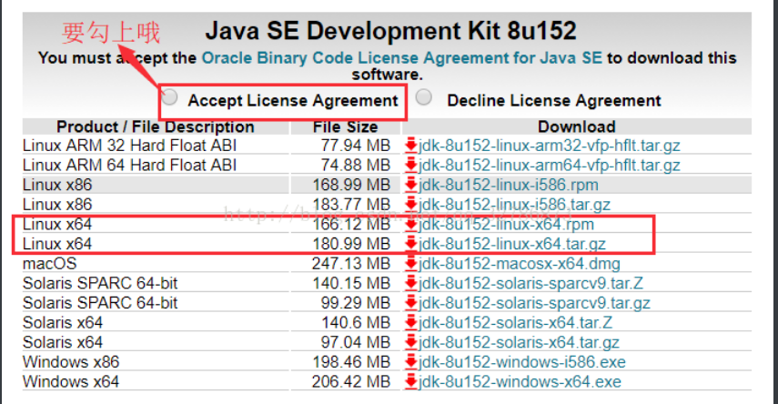
二、安装jdk
因为我安装的CentOS7.4系统自带jdk1.8，所以为了演示如何安装jdk，我需要先卸载系统自带的jdk
查看当前系统jdk的版本：java -version
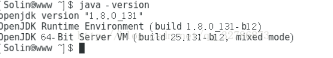
列举匹配已安装的java的软件包：yum list installed | grep java
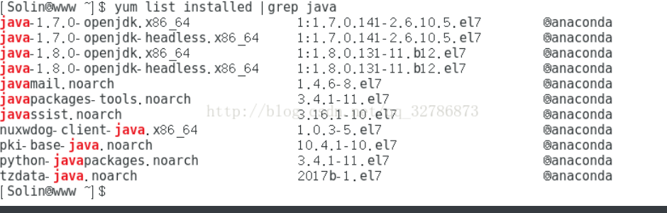
卸载安装的jdk：(yum命令参考：http://man.linuxde.net/yum)
yum -y remove java-1.7.0-openjdk*
yum -y remove java-1.8.0-openjdk*
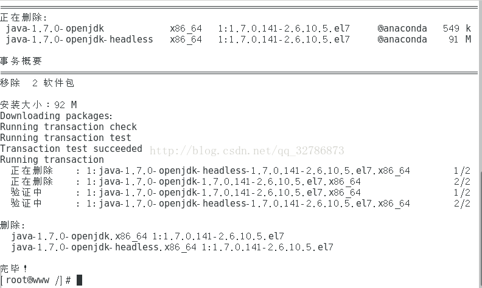
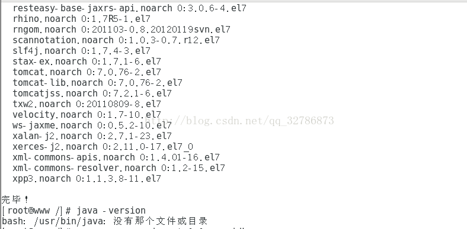
当结果出现了完毕！，就表示卸载成功。
安装jdk(介绍三种方法)
方法一：利用yum源来安装jdk
（此方法不需要配置环境变量）
查看yum库中的java安装包 ：yum -y list java*
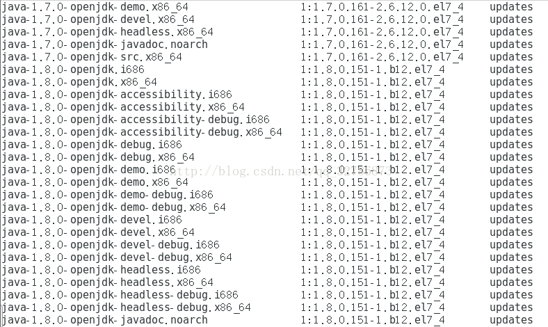
安装需要的jdk版本的所有java程序：yum -y install java-1.8.0-openjdk*
(安装完之后，默认的安装目录是在: /usr/lib/jvm/java-1.8.0-openjdk-1.8.0.151-1.b12.el7_4.x86_64)
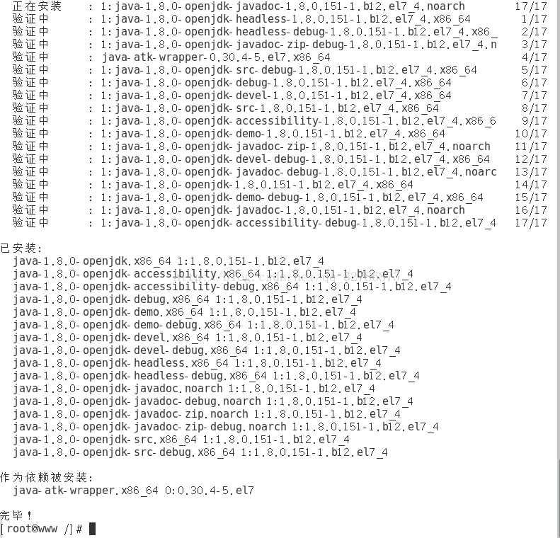
当结果出现了完毕！即安装完成。
查看java版本：java -version
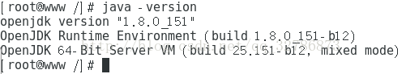
方法二：用rpm安装jdk
(可以使用man rpm命令查看rpm的帮助文档)
使用Xftp将下载好的jdk-8u152-linux-x64.rpm上传到CentOs上去，我这里放到了/home/lisonglin下
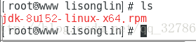
使用rpm命令安装： rpm -ivh jdk-8u152-linux-x64.rpm
(默认安装在/usr/java目录下，不用配置环境变量)
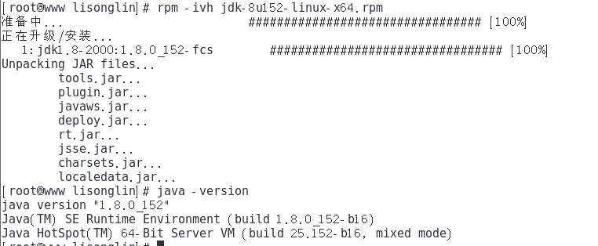
方法三：手动安装压缩包
手动解压JDK的压缩包，然后设置环境变量
使用Xftp将下载好的jdk-8u152-linux-x64.tar.gz上传到CentOs上去，我这里放到了/home/lisonglin下
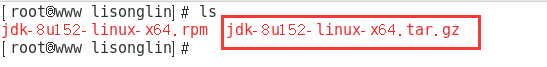
先将之前使用rpm方式安装的jdk卸载掉(如果没有安装过可跳过此步骤)
查询之前安装的jdk名称：rpm -qa | grep jdk
卸载jdk：rpm -e —nodeps jdk1.8 (此处也可以使用全名jdk1.8-1.8.0_152-fcs.x86_64)
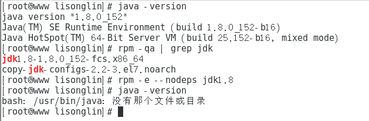
卸载完成！
1、复制安装包到/usr/java目录中(目录可以自己选)：cp jdk-8u152-linux-x64.tar.gz /usr/java
2、切换到/usr/java目录下：cd /usr/java
3、解压缩包：tar -zxvf jdk-8u152-linux-x64.tar.gz
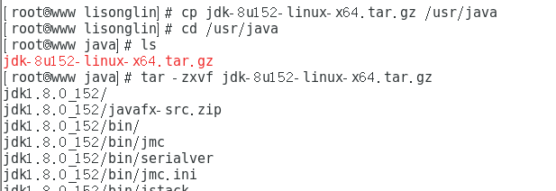
解压成功（表式JDK已安装成功，可查看jdk的文件夹）
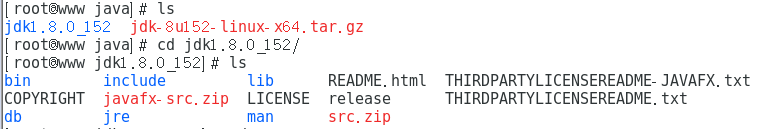
此时java -version命令还不能使用：
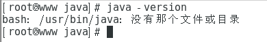
4、配置环境变量
使用vim /etc/profile 编辑profile文件 输入： vim /etc/profile
向文件里面追加以下内容：
#set java environment
JAVA_HOME=/usr/java/jdk1.8.0_152
JRE_HOME=$JAVA_HOME/jre
PATH=$PATH:$JAVA_HOME/bin:$JRE_HOME/bin
CLASSPATH=.:$JAVA_HOME/lib/dt.jar:$JAVA_HOME/lib/tools.jar:$JRE_HOME/lib
export JAVA_HOME JRE_HOME PATH CLASSPATH
注释：
JAVA_HOME指明JDK安装路径，就是刚才安装时所选择的路径，此路径下包括lib，bin，jre等文件夹（tomcat，Eclipse的运行都需要依靠此变量）。
CLASSPATH为java加载类(class or lib)路径，只有类在classpath中，java命令才能识别，设：.:$JAVA_HOME/lib/dt.jar:$JAVA_HOME/lib/tools.jar:$JRE_HOME/lib。CLASSPATH变量值中的.表示当前目录
PATH使得系统可以在任何路径下识别java命令，设为：$JAVA_HOME/bin:$JRE_HOME/bin。
特别注意：环境变量值的结尾没有任何符号，不同值之间用:隔开（windows中用;）。
5、使配置文件生效：source /etc/profile
6、测试配置是否成功
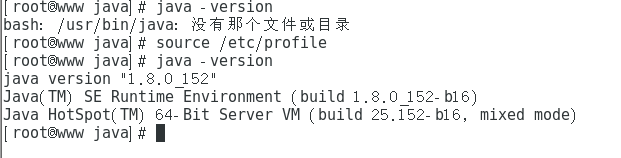
查找yum默认安装jdk路径
为了图方便。使用yum -y install jdk-9.0.1
安装完成之后，发现在centos7中。jdk的路径不在/usr/lib/jvm下面了。需要找到对应的路径。在此记录一下。
1、先找到java执行文件路径
whereis java
输出：java: /usr/bin/java
2、根据执行文件找到对应的软链接指向的文件路径
ls -lrt /usr/bin/java
输出： /usr/bin/java -> /etc/alternatives/java
3、进入/etc/alternatives/目录，发现还不是源文件目录。继续找
ls -lrt /etc/alternatives/java
输出：/etc/alternatives/java -> /usr/java/jdk-9.0.1/bin/java
看到jdk字样了。应该是源文件目录了。进入到路径
cd /usr/java/jdk-9.0.1/
确实是jdk-9的路径了。

...
...
Copyright 2021 sunfy.top ALL Rights Reserved